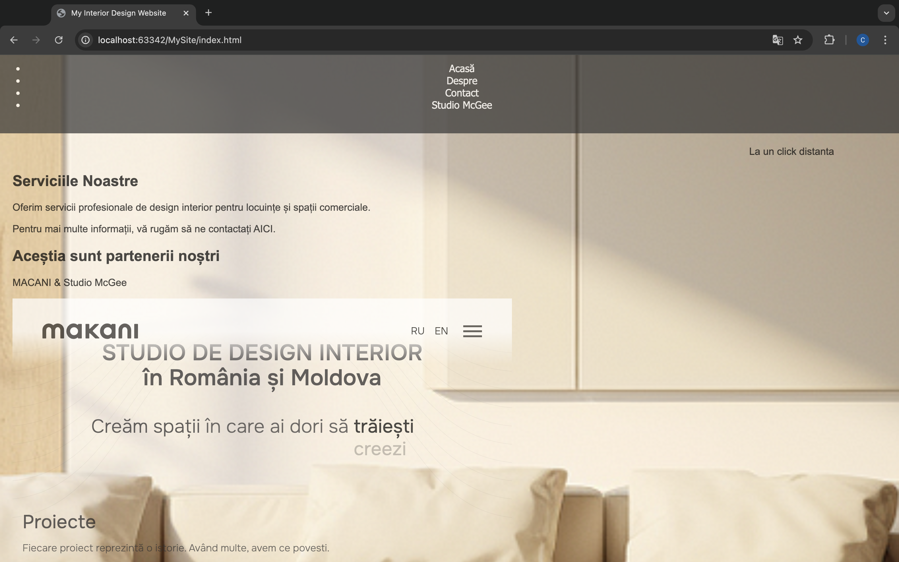

Interior Design Project
This project is an interactive website focused on interior design. It showcases a canvas area where users can interact with different design elements. The project was built using HTML and CSS, with an emphasis on creating an immersive and responsive design experience. Below you can find screenshots of various sections of the website:



Technologies used: HTML, CSS. The website is fully responsive and includes an interactive canvas area for users to experiment with design elements.